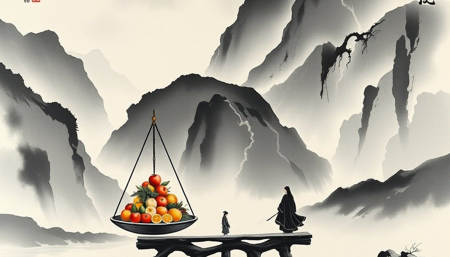

平等需要天天默念才能维持，这件事本身就泄露了天机：它对抗的是一个更省力、更本能的默认方向。那个方向叫俯视。轻慢，就是这种力学作用的结果。顺着人性往下流不需要用力，逆着人性往上撑才需要天天提醒。任何需要持续自我提示才能维持的姿态，最终都会败给那个不需要提示的姿态。
一个人把自己压到最低，等于提前宣告“我不值得被认真对待”。对方最省力的回应就是顺势俯视。俯视距离舒适，给出怜悯很容易，给出爱却很难。怜悯只需要一瞬间的心软，爱需要持续地把对方当成一个完整的人来注视。前者不费力，后者费力。在日复一日的相处里，费力的事总是最先被省略。
被俯视的一方如果长期处于这种关系里，会逐渐把轻慢当成关系的本来形状。没有人给过他第二种参照，他甚至以为爱就是这样：一个人高高在上，另一个人低到土里，偶尔得到一点温柔就感激不尽。
俯视给怜悯，仰视给崇拜，只有平视给爱。怜悯是向下看的，崇拜是向上看的，它们都不需要把对方当成和自己同等的人。爱不同。爱是两个独立个体之间的互相鉴赏，它要求双方站在同一高度，看得见彼此眼睛里完整的人。
卑微的姿态把关系的可能空间压缩到只剩俯视。对方无法平视一个躺在地上的人，除非他弯腰。弯腰很累，没有人能一直弯着腰生活。时间一长，他要么选择站直了俯视，要么转身走开。无论哪种结果，爱都已经不在场了。
有人问：如果对方足够善良，能不能一直弯腰？能，但那是牺牲。牺牲制造亏欠，亏欠制造距离。关系一旦变成债务结构，施与受就不再是平等的对流，而是一方永远欠着另一方。欠债的人很难去爱债主，他只想逃。
为什么有人会用卑微去换爱？因为从小到大，他们被反复教导：放低自己，别人才会接纳你；把自己看得很低，才叫谦虚；委屈自己，关系才能维持。这套教导在全世界许多地方都存在，不分男女。
但事实是反的。爱发生的前提是对方身上有可被欣赏的东西。卑微的姿态是一场主动的自我取消：把自己的价值、主见和情绪一并抹掉，等于亲手注销了自己被爱的资格。一个人如果连自己都不把自己当人看，别人很难把他当人看。人眼会自动忽略那些不占据空间的存在。
那些被教导放低自己的人，用的手段与目标之间隔着整个悖论。卑微被当作入场券来使用，但它是一张注销令。越努力执行，越不可能成功。他们跪在地上伸出手，以为在请求爱。那个姿势能求来的只有俯视。俯视的目光里装得下怜悯和施舍，装不下爱。

卑微把关系变成债务结构：一方供奉，一方接收。接收方被置于永远亏欠的位置。亏欠感不会催生爱，它催生的是轻慢，或者逃避。轻慢是因为“你自愿给，我何必珍惜”；逃避是因为“我还不起，不如不见”。
爱是两个独立的人互相鉴赏，不是债务清偿。供奉得越彻底，关系离爱越远。回到开头那个每天提醒自己平等的人。他累了。他在对抗力学，而力学赢了。他最终俯视她，是结构推着他走到了这一步。在那种姿态的配置下，平视根本不是一个可选项。
尾声
怜惜不等于爱，照顾也不等于。在亲子关系或某些不对等照护关系中，卑微有时能换来怜惜与照顾。平等个体之间的亲密关系里，卑微的策略几乎总是导向轻慢。如果爱只发生在平视的目光里，那从小到大都在练习放低自己的人，该把目光放到哪里去？这个问题没有现成答案，但至少要先看见一个事实：土里的位置，看不见平视的目光。
小汪老师的成长观察笔记